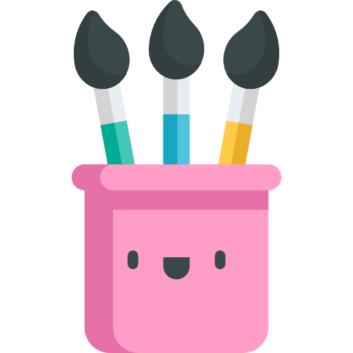

About Zara
Hi! I'm Zara, a passionate creator and designer. My love for creativity started as a child, exploring art and crafts. Over time, I developed a strong interest in web design and storytelling through video editing.
Currently, I am learning UX/UI and Web Design and starting to use tools like Figma to enhance my skills. This website reflects my journey as a creative individual, blending design and functionality to create something meaningful.
- Favorite tools: Figma, Photoshop, and Canva.
- Hobbies: Painting, photography, video editing, and journaling.
- Goal: To become a skilled UX/UI designer.
